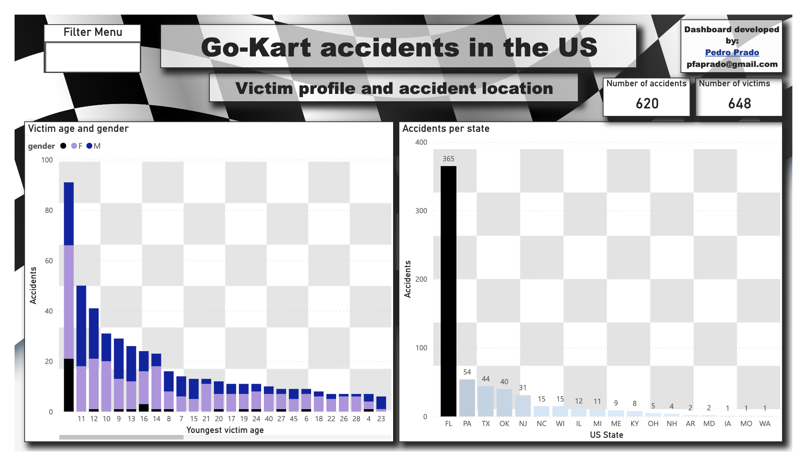
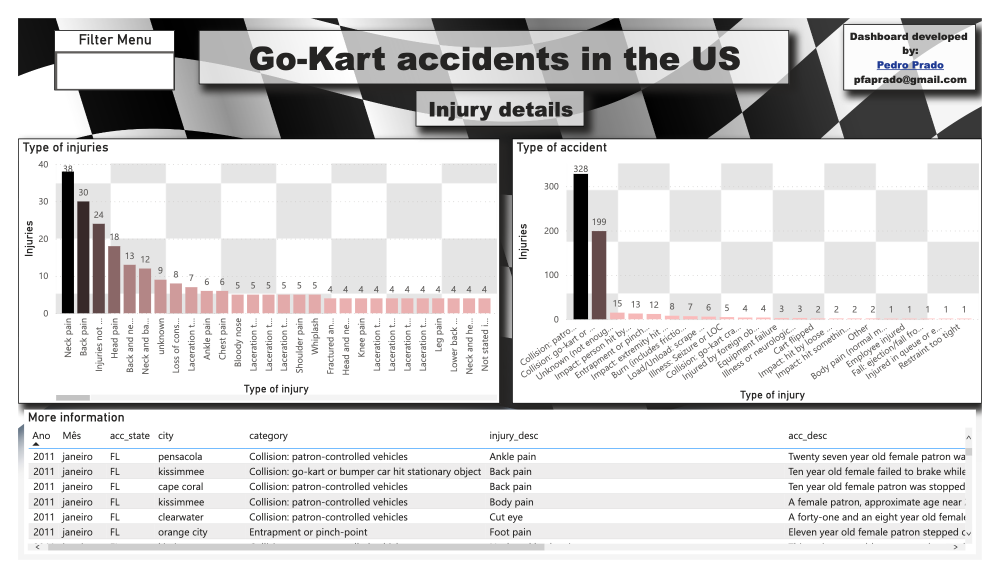
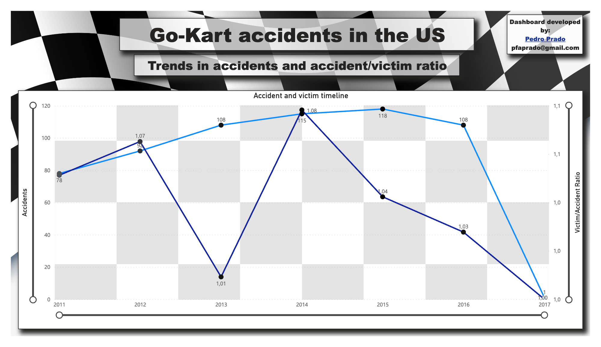

Other projects
An assortment of investigations, apps and dashboards for clients using tools like Streamlit, Airflow, PowerBI and Tableau.
A mining company had trouble visualizing data from their water analyses - great dimensionality (a wide range of analyses), distributed by differente dates and sites of water samples. A customized solution was provided to facilitate stakeholder insight generation. PowerBI dashboard here!
The entertainment industry is a very competitive one. A company interested in implementing a go-kart attraction wanted to understand the main causes of accidents in their tracks to improve safety and reduce costs. A dashboard was developed to provide insights about events/disasters that could be avoided by preventive, predictive and corrective maintenance. Application here!
The entertainment industry is a very competitive one. A company interested in implementing a go-kart attraction wanted to understand the main causes of accidents in their tracks to improve safety and reduce costs. A dashboard was developed to provide insights about events/disasters that could be avoided by preventive, predictive and corrective maintenance.
  